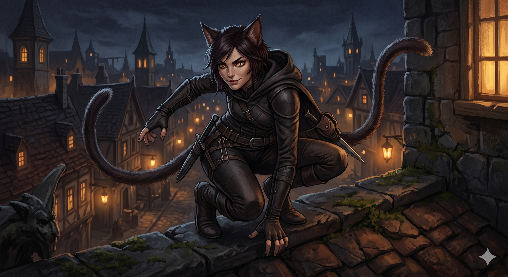

Appears in: Couch Potato Chaos
Profile

- Appears in: Couch Potato Chaos
- Aliases: Ally
- Race: Cat-person
- Class: Thief (presumed)
- Personality: Ally is street-smart, pragmatic, and possesses the knowing confidence of someone who has operated outside the law long enough to treat it as a profession rather than a rebellion. Her willingness to share thieves-guild secrets with Tasha — including the log-substitution jutsu and the critical warning about suicide death penalties — suggests a generous streak beneath the criminal exterior, or perhaps a shrewd recruiter’s instinct for identifying useful potential allies. As a cat-person, she likely possesses the casual grace and independence associated with her race, and her membership in the thieves guild indicates she works within an organised criminal hierarchy rather than as a lone operator.
- Backstory: Little is known of Ally’s history beyond her profession and racial identity. She is an infamous cat burglar and a member of the thieves guild operating in or near Brightwind, where she has enough of a reputation to be recognised. Her expertise includes advanced thief techniques like the log-substitution jutsu — a stealth ability that presumably involves replacing oneself with an object to escape detection. She is also knowledgeable about the finer mechanical details of Etheria’s death and resurrection system, specifically that suicide deaths carry a penalty of half your levels — information that suggests either personal experience with the respawn cycle or thorough guild training in survival tactics.
- Significant story events:
- Chapter 19 — Turnabout Identity (Chaos): Ally encounters Tasha during the trial sequence and teaches her about the log-substitution jutsu, a thief technique. She also warns Tasha that suicide deaths cost half your levels — a crucial piece of game-mechanical knowledge that could save an uninformed player from catastrophic level loss. This interaction occurs during one of Tasha’s most vulnerable moments, making Ally’s willingness to share information particularly valuable.
- Notable Quotes:
[No direct quotes from Ally are recorded in the Notable Quotes section of the wiki. Her dialogue would need to be sourced from Chapter 19 of Couch Potato Chaos. Her most significant contribution is the mechanical information she shares about the log-substitution jutsu and suicide death penalties.]
- Relationships:
- [Tasha Singleton](./character-tasha-singleton.html): Informant and ally of convenience. Ally shares thieves-guild knowledge with Tasha during the trial, providing both a combat-relevant technique and a critical warning about death penalties. Their interaction is brief but consequential.
- Thieves Guild: Professional affiliation. Ally operates as a guild member, giving her access to techniques like log-substitution and information about game mechanics that non-guild adventurers might not know.
- References: Couch Potato Chaos: Chapter 19 - Turnabout Identity, Characters